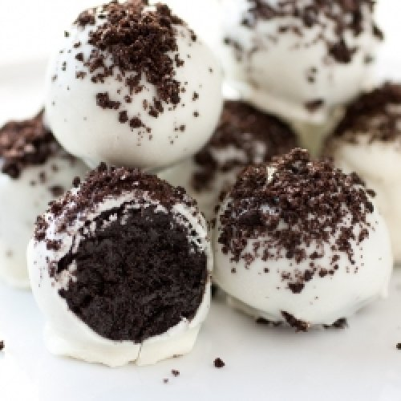

Ponemos un ratito la crema en el congelador para que esté bien fría. Mientras tanto, trituramos 12 galletas Oreo con procesadora hasta que parezca arena.
Y machacamos con un mortero otras 12 galletas para que queden en trocitos.
En un bol, ponemos el queso tipo Philadelphia junto al azúcar y batimos con batidor eléctrico hasta que quede cremoso y firme.
Incorporamos la crema bien fría y montamos
Añadimos los trocitos de galletas Oreo y mezclamos con cuidado, con movimientos envolventes.
Cuando esté bien mezclado, lo pasamos a una manga pastelera para facilitar el emplatado.
En los vasitos donde vas a servir, ponemos primero una cucharada de galleta triturada, llenamos hasta la mitad con la mousse de Oreo,
otra cucharada de galleta triturada y acabamos de rellenar con nuestra mousse. Para culminar, decoramos con una mini Oreo.
Trufas de oreo bañadas

Ingredientes
1 paquete de Oreo
100 g de queso crema ó 100 g ddl repostero (lo que prefieras)
100 g de chocolate blanco
opcional manteca de cacao o aceite de girasol
Preparación
Trituramos las Oreo.
Luego agregamos el queso crema ó el dulce de leche.
Empezamos a hacer bolitas de cualquier forma y tamaño.
Luego llevamos por 15 min al freezer y mientras tanto vamos derritiendo el chocolate blanco en intervalos de a 30 segundos.
Luego bañamos las trufas en el chocolate ya derretido y hacemos malabares para sacarlas bañadas
Después a la heladera hasta que se endurezca el chocolate y listo.
=======
Postres Oreo
Postes con Oreo
Copas oreo
Ingredientes
200 gr queso tipo Philadelphia
200 ml de crema para montar
12 galletas Oreo trituradas finas
12 galletas Oreo machacadas más gruesas
80 gr azúcar glas
Preparación
Ponemos un ratito la crema en el congelador para que esté bien fría. Mientras tanto, trituramos 12 galletas Oreo con procesadora hasta que parezca arena.
Y machacamos con un mortero otras 12 galletas para que queden en trocitos.
En un bol, ponemos el queso tipo Philadelphia junto al azúcar y batimos con batidor eléctrico hasta que quede cremoso y firme.
Incorporamos la crema bien fría y montamos
Añadimos los trocitos de galletas Oreo y mezclamos con cuidado, con movimientos envolventes.
Cuando esté bien mezclado, lo pasamos a una manga pastelera para facilitar el emplatado.
En los vasitos donde vas a servir, ponemos primero una cucharada de galleta triturada, llenamos hasta la mitad con la mousse de Oreo,
otra cucharada de galleta triturada y acabamos de rellenar con nuestra mousse. Para culminar, decoramos con una mini Oreo.
Trufas de oreo bañadas
Ingredientes
1 paquete de Oreo
100 g de queso crema ó 100 g ddl repostero (lo que prefieras)
100 g de chocolate blanco
opcional manteca de cacao o aceite de girasol
Preparación
Trituramos las Oreo.
Luego agregamos el queso crema ó el dulce de leche.
Empezamos a hacer bolitas de cualquier forma y tamaño.
Luego llevamos por 15 min al freezer y mientras tanto vamos derritiendo el chocolate blanco en intervalos de a 30 segundos.
Luego bañamos las trufas en el chocolate ya derretido y hacemos malabares para sacarlas bañadas
Después a la heladera hasta que se endurezca el chocolate y listo.